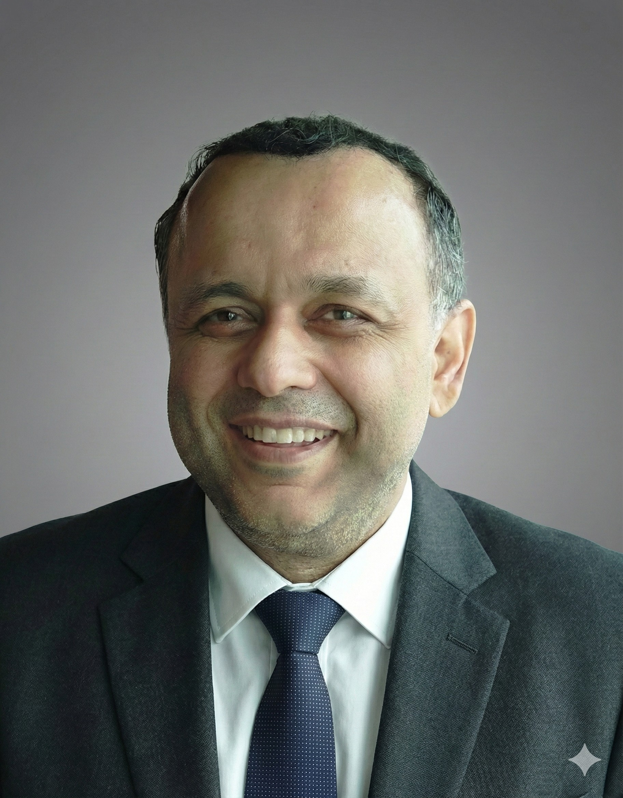

Results-driven and visionary Head of Engineering and R&D with a proven track record of scaling high-growth departments and steering highly specialized, elite engineering teams. I leverage deep technical expertise, strategic leadership, and stakeholder management to pioneer next-generation solutions in complex energy environments.
Currently leading a highly specialized team of Core R&D Specialists as the Head of Grid Flow Platform Engineering and R&D at Siemens Energy India Limited (SEIL), while concurrently steering the Battery Energy Storage Systems (BESS) department through a strategic transition. In this dual-leadership capacity, my mandate builds upon my success in scaling the BESS engineering team to 35+ members, establishing the Battery Advanced AI Technology Lab (BATL), and fostering a robust culture of cross-functional innovation.
Engineers Led
Publications
Countries Worked
Years Experience
Applied Expertise Across Sectors
Energy
Mechatronics
Industry 4.0
Aerospace
Automotive
Detailed Roles, Projects & Industrial Collaborations
Siemens Energy India Limited (SEIL) (Mar 2025 - Present)
Siemens India Limited (SIL) (Aug 2019 - Mar 2025)
DTU Compute, Denmark
Led development of cyber-physical models for Industry 4.0, renewable energy, and smart cities. Expertise in System ID, SDEs, Optimization.
Vrije Universiteit Brussel (VUB), Belgium
Developed theoretical frameworks for black-box modeling and stochastic identification of Li-ion battery dynamics. Nonlinearity detection & characterization.
Industrial Researcher
Gas turbine health monitoring using statistical signal processing & ML. Fault diagnosis, prognosis, FMECA, IPR patent analysis.
Senior Research Fellow
Active vibration control for rotor shaft systems. Experiment design, simulation, control framework.
Application Engineer / Resident Engineer
Resident Engineer at GM Europe. Integrated ESP, ABS, AWD on HIL simulators. Automated failsafe testing. Delivered simulator for Conti-Teves AG.
Industrial Researcher
Control system for industrial clinching process. Nonlinear math modeling, PLC/Microcontroller algo design, HIL sims, Patent review.
Product Development Engineer
PLC motion control, pneumatic circuits for CNC textile and filter machines.
Industrial Trainee
Process instrumentation, closed-loop controllers, electrical drives.
Vrije Universiteit Brussel, Belgium
Domain: Nonlinear System ID & ML.
Siemens Digital Industries, Toyota ME, Volvo AB
The University of Sheffield, UK
Partners: Rolls-Royce plc, Aero-engine controls.
KU Leuven, Belgium
Cum LaudeHochschule Ravensburg-Weingarten, Germany
Sehr Gut (A+)Partner: Tox-Pressotechnik GmbH & Co. KG
Kurukshetra University, India
First Class with HonoursHosted by Prof. Roy S. Smith at the Automatic Control Laboratory (IfA). Fully sponsored by a research and travel grant from the FWO (Research Foundation - Flanders).
Active contributor to European Research Network in System Identification (ERNSI ).
Automatica, IEEE Trans. on Control Systems Tech, SIAM Journal of Control, IFAC, ICC, ACC, CDC.
Highly Cited Status
Recognized by Applied Energy
Athak Goyal, Vishnu Nair, Vikas Yadav... Rishi Relan
Proceedings of the ASME (2025)
Martha A. Zaidan, Ville Haapasilta, Rishi Relan, Pauli Paasonen, Veli-Matti Kerminen, Heikki Junninen, Markku Kulmala, Adam S. Foster
Featured In:
Vishnu Nair, Vikas... Rishi Relan
CASML 2024, IISc Bangalore
IEEE SEFET 2025
Applied Energy (2018)
Expert Systems with Applications (2015)
IEEE Trans. on Control Systems Tech (2016)
Energy (2016)
View all 65+ Publications on Google ScholarIGTI / ASME (Jul 2024)
Siemens Generator R&D (India )
Journal of Applied Energy, Elsevier (Jun 2020)
DTU, MADE, CITIES (Denmark )
VUB, VLAIO-SBO Grant (Belgium )
OMFOND, VUB, FWO, HIM, HCM, EECI, UKIERI
Conferrer: EPSRC & Rolls-Royce plc (UK )
Only awarded to 30 candidates/year in the developing world.
DST India & IIT Delhi (2008-10)
Aditya Dubey
Mechanical Engineer - Heat Transfer & FE, Siemens Energy Innovation Center
Jaroslaw Szwedowicz, D.Sc., Ph.D., Eng.
Senior Principal Key Expert for Gas Turbine Modules at Siemens, ASME Fellow
Dr.-Ing. Michael Hortmann
Director, Enterprise Account Management (ANSYS)
Uwe Loehse
Master Engineer (Retd.), Siemens
Vigneshwaran Venugopalan
Software Engineering Manager at Boeing
Ishita Bansal
General Manager at BSES
Rune Grønborg Junker
Assistant Professor, Technical University of Denmark
Gurdev Singh
Lead- Autonomous Control Systems, Siemens Energy
Stefan Lichtenberger
Technical Program Lead, Siemens Energy AG, Germany
Dr.-Ing. Peter Waeltermann
CEO at dSPACE Inc
Native